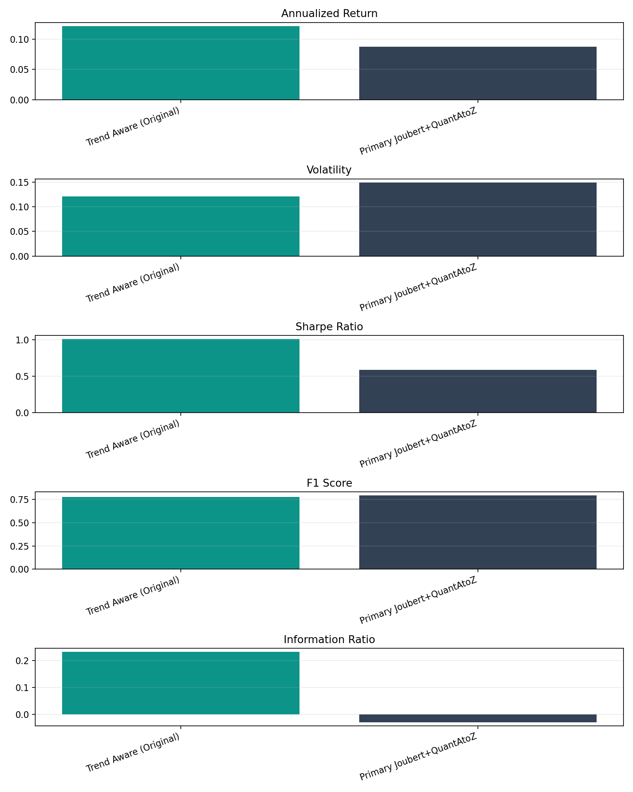
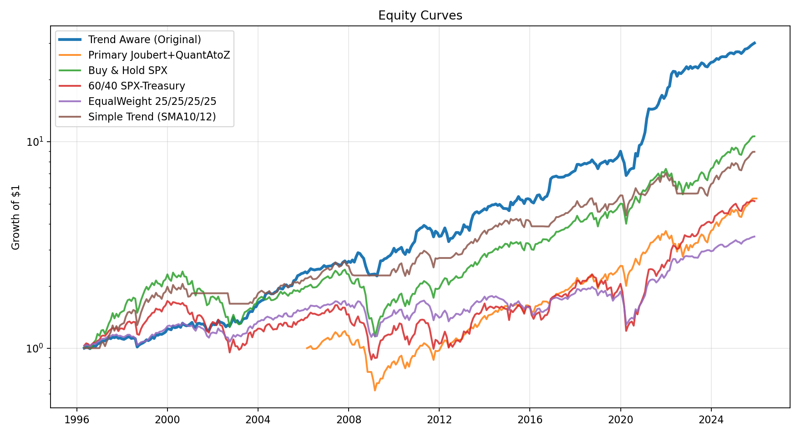
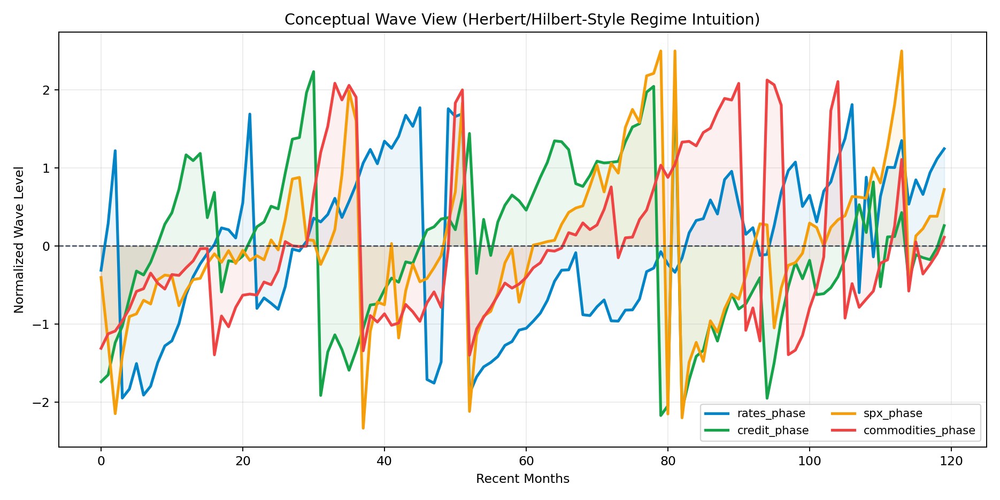
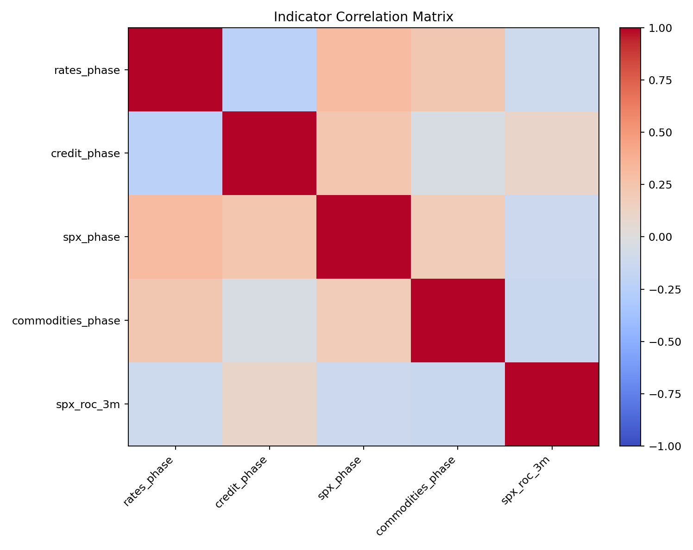
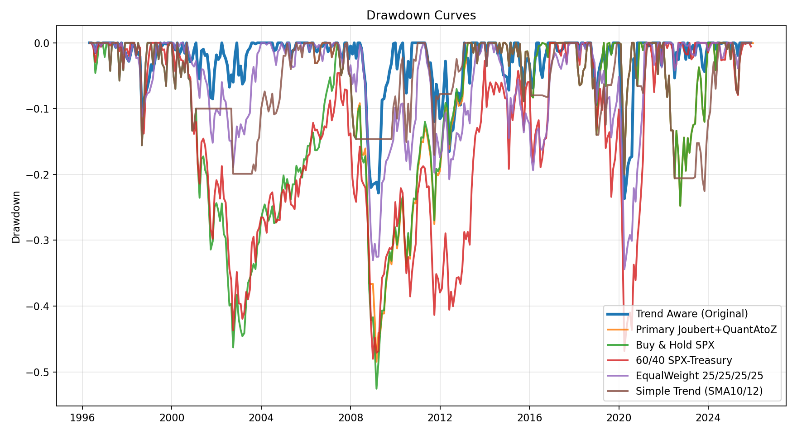
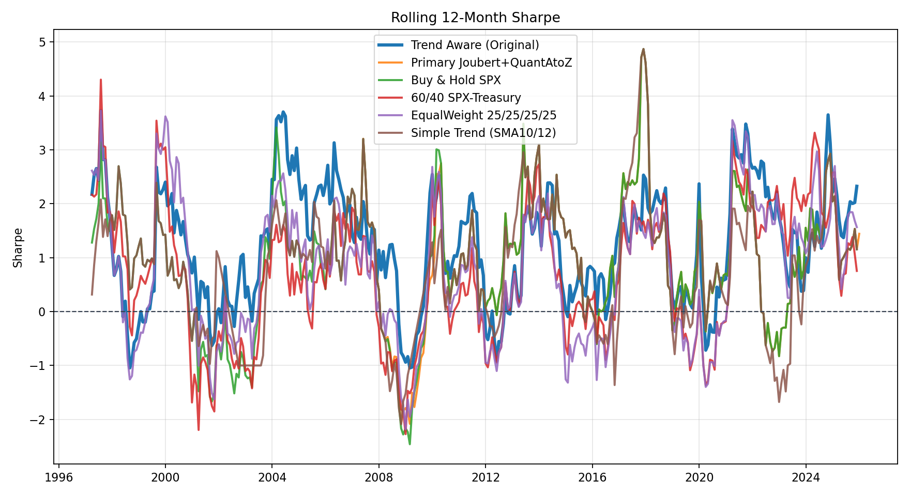

Cross-asset cycle-phase allocation model. 356 monthly periods. Outperforms all four benchmarks on the composite research score.
High-level metrics for Trend Aware (Original) with direct peer comparison. Generated 2026-02-19 18:30:07 UTC. Values marked * are best in-table.


Focus Model vs Peer
| Model | Ann. Return | Volatility | Sharpe | Max DD | Win Rate | Cum. Return | Info. Ratio | SPX Corr | Pair Corr | Ind–SPX Corr | Precision | Recall | F1 | Periods |
|---|---|---|---|---|---|---|---|---|---|---|---|---|---|---|
| Trend Aware (Original) | 12.15%* | 12.06%* | 1.008* | −23.68%* | 66.01%* | 2901.91%* | 0.232* | 0.558* | 0.169* | 0.154 | 63.76% | 100.00%* | 77.87% | 356 |
| Primary Joubert+QuantAtoZ | 8.74% | 14.88% | 0.587 | −48.46% | 64.44% | 430.36% | −0.029 | 0.984 | 0.282 | 0.036* | 66.24%* | 98.73% | 79.28%* | 239 |
Each benchmark answers a distinct question about whether the primary model adds value over simpler alternatives. All metrics computed over the same date range as the focus strategy.
Always long equity. Earns every up and every down month.
Institutional static allocation with basic diversification.
Neutral cross-asset exposure across equities, rates, commodities, credit.
Low-complexity moving-average crossover rule.
| Model | Ann. Return | Volatility | Sharpe | Max DD | Win Rate | Cum. Return | Info. Ratio | SPX Corr | Pair Corr | Ind–SPX Corr | Precision | Recall | F1 | Periods |
|---|---|---|---|---|---|---|---|---|---|---|---|---|---|---|
| Trend Aware (Original) | 12.15%* | 12.06% | 1.008* | −23.68% | 66.01%* | 2901.91%* | 0.232* | 0.558* | 0.169* | 0.154* | 63.76% | 100.00%* | 77.87%* | 356 |
| Buy & Hold SPX | 8.29% | 15.32% | 0.541 | −52.56% | 63.76% | 961.05% | 0.000 | 1.000 | N/A | N/A | 63.76% | 100.00%* | 77.87%* | 356 |
| 60/40 SPX-Treasury | 5.68% | 16.87% | 0.337 | −48.01% | 58.43% | 415.03% | −0.163 | 0.654 | N/A | N/A | 63.76% | 100.00%* | 77.87%* | 356 |
| EqualWeight 25/25/25/25 | 4.28% | 10.95%* | 0.391 | −34.40% | 59.55% | 247.02% | −0.362 | 0.625 | N/A | N/A | 63.76% | 100.00%* | 77.87%* | 356 |
| Simple Trend (SMA10/12) | 7.66% | 12.11% | 0.633 | −22.53%* | 48.88% | 792.91% | −0.109 | 0.786 | N/A | N/A | 65.17%* | 76.65% | 70.45% | 356 |
Indicator rationale and relative performance ranking across all candidate strategies. Current outperformer on the composite research score: Trend Aware (Original).
All Candidate Models — Performance Comparison
| Model | Ann. Return | Volatility | Sharpe | Max DD | Win Rate | Cum. Return | Info. Ratio | SPX Corr | Pair Corr | Ind–SPX Corr | Precision | Recall | F1 | Periods |
|---|---|---|---|---|---|---|---|---|---|---|---|---|---|---|
| Trend Aware (Original) | 12.15%* | 12.06% | 1.008* | −23.68% | 66.01%* | 2901.91%* | 0.232* | 0.558 | 0.169* | 0.154 | 63.76% | 100.00%* | 77.87% | 356 |
| Primary Unified V1 | 6.49% | 7.70%* | 0.843 | −18.76%* | 63.41% | 552.76% | −0.140 | −0.189* | 0.587 | 0.318 | 68.75%* | 57.64% | 62.71% | 358 |
| Primary Joubert+QuantAtoZ | 8.74% | 14.88% | 0.587 | −48.46% | 64.44% | 430.36% | −0.029 | 0.984 | 0.282 | 0.036* | 66.24% | 98.73% | 79.28%* | 239 |
Layer-by-layer breakdown of the strategy pipeline — from raw monthly prices to portfolio weights and return attribution.
The wave view explains the Hilbert-style intuition: cyclical indicators move in phases, and the model interprets their relative phase alignment as risk-on / risk-off regime context.


Side-by-side comparison of the primary strategy against all four benchmarks. Visual language reused from the M1 results structure: equity curve, drawdown, rolling Sharpe, and metric bars.


Full Benchmark Comparison Table
| Model | Ann. Return | Volatility | Sharpe | Max DD | Win Rate | Cum. Return | Info. Ratio | SPX Corr | Pair Corr | Ind–SPX Corr | Precision | Recall | F1 | Periods |
|---|---|---|---|---|---|---|---|---|---|---|---|---|---|---|
| Trend Aware (Original) | 12.15%* | 12.06% | 1.008* | −23.68% | 66.01%* | 2901.91%* | 0.232* | 0.558* | 0.169* | 0.154* | 63.76% | 100.00%* | 77.87%* | 356 |
| Buy & Hold SPX | 8.29% | 15.32% | 0.541 | −52.56% | 63.76% | 961.05% | 0.000 | 1.000 | N/A | N/A | 63.76% | 100.00%* | 77.87%* | 356 |
| 60/40 SPX-Treasury | 5.68% | 16.87% | 0.337 | −48.01% | 58.43% | 415.03% | −0.163 | 0.654 | N/A | N/A | 63.76% | 100.00%* | 77.87%* | 356 |
| EqualWeight 25/25/25/25 | 4.28% | 10.95%* | 0.391 | −34.40% | 59.55% | 247.02% | −0.362 | 0.625 | N/A | N/A | 63.76% | 100.00%* | 77.87%* | 356 |
| Simple Trend (SMA10/12) | 7.66% | 12.11% | 0.633 | −22.53%* | 48.88% | 792.91% | −0.109 | 0.786 | N/A | N/A | 65.17%* | 76.65% | 70.45% | 356 |
Summary of backtest findings and their implications for the M2 meta-labeling filter layer.
Trend Aware (Original) produced 12.15% annualized return with Sharpe 1.008 and max drawdown −23.68%, outperforming all four benchmarks on the composite research score.
With perfect recall (100%), this primary layer captures every BUY opportunity. M2 can therefore focus entirely on confidence filtering, position sizing, and turnover-cost control.
A strong primary model must not only earn returns but also preserve directional recall quality. Use both the benchmark table and classification metrics together when evaluating primary model candidates.
Complete HTML report and all supporting artefacts exported from the primary model pipeline.
reports/trend_aware_report.htmlreports/trend_aware_report_assets/executive_summary_metrics.csvreports/trend_aware_report_assets/focus_vs_peer_metrics.csvreports/trend_aware_report_assets/benchmarks_comparison.csvreports/trend_aware_report_assets/alternative_models_research.csvreports/trend_aware_report_assets/focus_indicator_correlation_matrix.csvreports/trend_aware_report_assets/equity_curves.pngreports/trend_aware_report_assets/drawdown_curves.pngreports/trend_aware_report_assets/rolling_sharpe.pngreports/trend_aware_report_assets/executive_metric_bars.pngreports/trend_aware_report_assets/wave_visualization.pngreports/trend_aware_report_assets/indicator_corr_heatmap.png